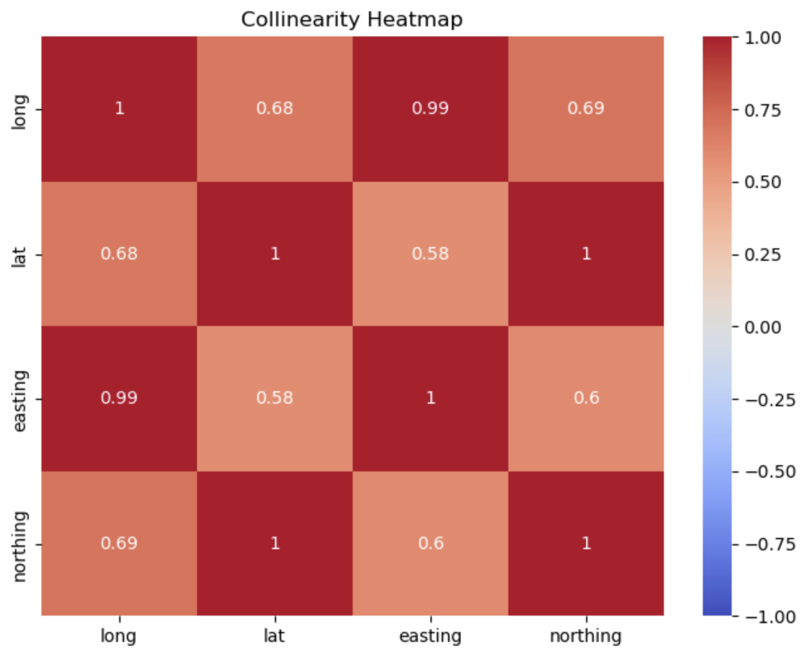
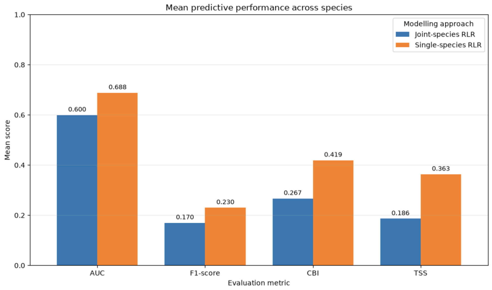
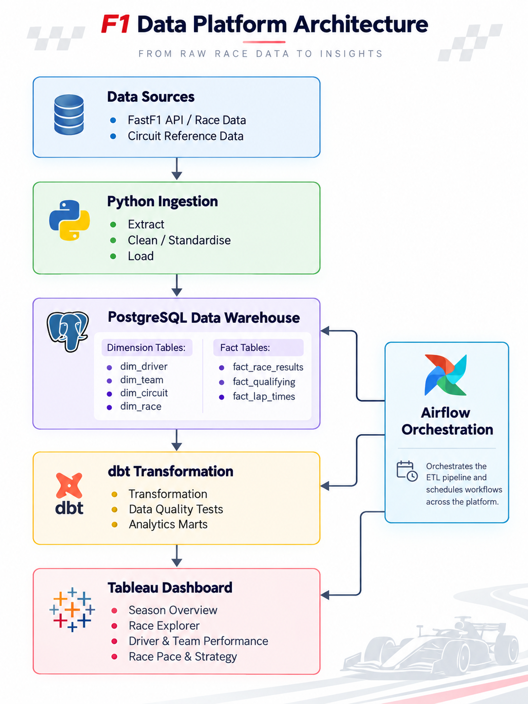
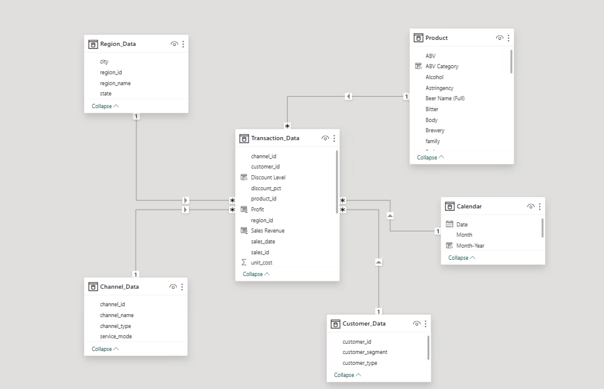
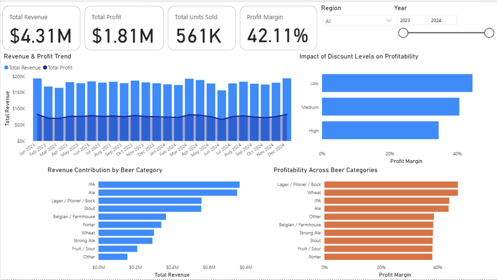

Data Analyst · Data Engineer
Hi, I'm Pranav.
I build data systems that turn raw data into useful insights.
I work across data engineering, business intelligence, analytics and data science — from building reliable data foundations to creating insights that support better decisions.
About Me
I graduated with a Master of Data Science and Decisions from UNSW(Sydney). I’m naturally curious about how things work, how they came about, and how they can be improved. That’s probably why I enjoy data so much! I like building things, analysing them, and understanding what is actually going on underneath the surface.
I’m most interested in problems that have some real-world impact. I’d much rather work on something useful than solve a theoretical problem just for the sake of it. I enjoy building pipelines, analysing data, and turning something messy into something people can actually use.
Outside of data, sport is a big part of my life. I play soccer, follow the Premier League, Formula 1, tennis and cricket, and I love the strategy, competition, resilience and teamwork behind all of them. I’m usually a calm, thoughtful problem-solver in a work setting — although put me on a football pitch and the confidence level changes quite a bit.
Right now, I’m focused on building useful things, growing as a data professional, and finding the right opportunity to start the next stage of my career. If something here catches your interest, I’d be very happy to have a chat.
Contact MeData Engineering
Pipelines, ETL, modelling and databases.
Analytics & BI
Dashboards, reporting and business insights.
Data Science
Statistical modelling and machine learning.
My Toolkit
Technologies I work with.
Analytics & BI
Programming & Data
My Experience
Relevant professional experience.
Business Intelligence
Junior Software Developer
CAI Info India Pvt Ltd
Worked within a Business Intelligence team building ETL pipelines with Azure Data Factory and SQL Server, improving data processing efficiency and supporting reliable downstream analytics.
I optimised SQL queries and stored procedures used in reporting, strengthened data validation processes, and worked with cross-functional teams to deliver analytics-ready datasets and models for dashboards and operational decision-making.
Selected Work
Projects built around real data problems.


01
UNSW Academic Project · Data Science
Species Distribution Modelling
A UNSW group project investigating species distribution using environmental and spatial predictors.
My contribution focused on exploratory data analysis and Regularised Logistic Regression, including model tuning, class balancing and cross-validation.
Want to see more?
Visit my GitHub for more projects
02
In Progress
Data Engineering
F1 Data Platform
An end-to-end Formula 1 data platform for collecting, transforming, modelling and analysing racing data across seasons, races, drivers, teams and lap-level performance.


03
Business Intelligence · Data Modelling
Beer Portfolio Analytics
A Power BI solution for analysing product portfolio performance across revenue, profitability, customers, channels, regions and individual products.
My primary contribution was designing the analytical data model and developing the final interactive dashboard.
Get In Touch
Let's work with data.
I'm interested in Data Analyst and Data Engineering opportunities in Australia.